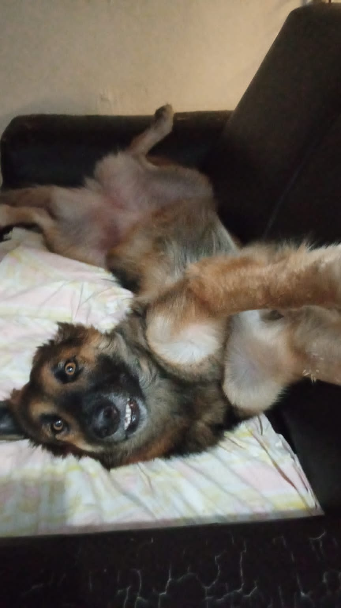

Oi, eu sou a Raissa
Tenho 28 anos, nasci em Manaus-AM, atualmente moro em Itajaí - SC,
cursei faculdade de Engenharia Elétrica na UEA até o 7 periodo mas tranquei
porque não me indentificava com o curso e não tinha tantas expectativas
de crescimentto profissional.
Eu tive contato com a programação durante a faculdade
e participei de alguns projetos que me fizeram gostar de codar,
em dezembro de 2021 conheci a Trybe que é uma escola de programação de desenvolvimento
Web, me inscrevi para o processo seletivo e recebi o meu sim em Março de 2022.
Estou muito animada e aproveitando ao máximo essa nova oportunidade na minha vida
Eu sou apaixonada em praticar esportes e artes marcias, pratiquei muitos anos jiu-jitsu e também passo minhas horas de lazer assintindo animes, gosto muito de One Piece e inclusive acompanho a leitura do seu mangá semanalmente pelo site da One Piece EX.
Minha cachorra, Nami.
